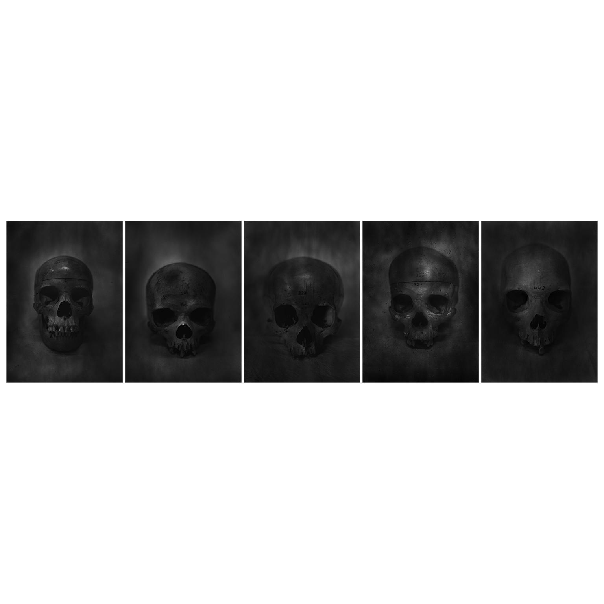
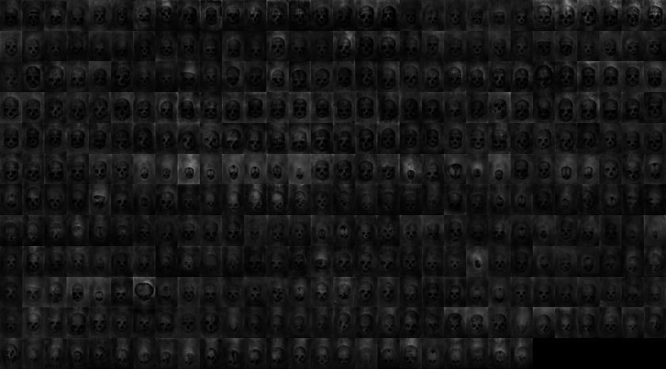

2015
Multis
Fotografias

Sequence one - (6, 106, 223, 322, 442)
- Dimensões
- 320 × 230 mm/imagem
- Série
- Multis
- Ano
- 2015

333
- Dimensões
- 320 × 230 mm/imagem
- Série
- Multis
- Ano
- 2015
Multis é uma série fotográfica realizada com câmera de grande formato (5 × 7 polegadas), dando continuidade às investigações técnicas desenvolvidas em OJardim. As imagens foram produzidas com a mesma lente artesanal utilizada naquela série, empregando chapas de raios X como negativos fotográficos.
A série é composta por 450 fotografias de crânios humanos organizadas em 90 polípticos, cada um formado por cinco imagens. Os espécimes fotografados pertencem a coleções anatômicas da cidade de São Paulo. Embora compartilhem uma estrutura anatômica comum, as imagens revelam diferenças sutis de forma, textura, proporção e desgaste, evidenciando simultaneamente singularidade e recorrência.
O título Multis refere-se à multiplicidade de existências sugerida pelo conjunto. No momento de sua realização, cada crânio foi concebido como a representação de um universo autônomo. Os polípticos organizam essas diferenças em sequências visuais que aproximam repetição e variação, propondo uma reflexão sobre a coexistência de múltiplas possibilidades de existência dentro de uma mesma condição humana.
Ao longo dos anos, a compreensão conceitual da série foi transformada. O que inicialmente foi interpretado como um conjunto de universos ou personagens pertencentes a uma narrativa ficcional passou a ser entendido como o primeiro registro de uma multiplicidade de entidades observadas e catalogadas pelo artista. Sob essa perspectiva, Multis marca o surgimento de uma investigação que mais tarde seria desenvolvida através da catalogação de personificações epistêmicas, constituindo um ponto de transição entre a construção narrativa presente nos trabalhos anteriores e uma prática de observação, classificação e tradução de um ecossistema interno.
Os 90 polípticos constituem um inventário visual da diferença. Cada imagem afirma uma singularidade própria ao mesmo tempo em que permanece vinculada a um conjunto maior de correspondências, relações e recorrências.